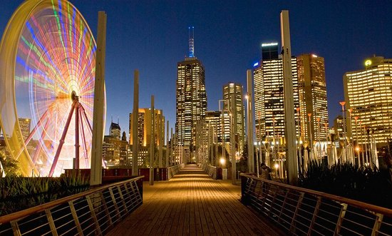

Australia
Sam's
for more info click here
Melbourne
Awesome city, easy to get around with great food, nightlife, arts, etc. We often compared it to San Francisco vs Sydney being like Los Angeles.
A great aspect of Melbourne is that the city is super easy to get around and great public transportation. The main area is really only about 8 blocks by 8 blocks so you can walk most places within 1.5 miles. If not, the rail connects you throughout CBD and other places like Chapel street and St Kilda. I'd recommend roaming the parks, graffiti art, have drinks by the Yara and Docklands (must have a James Squire Golden Ale straight from their brewery), and grill out a meal with food you buy from Queen Vic market.
I was on a college budget so most of my meals were from Queen Vic market. We would cook out most days at our apartment/dorm. For a nice meal, I'd recommend going to the Docklands and/or near the casino on the Yara